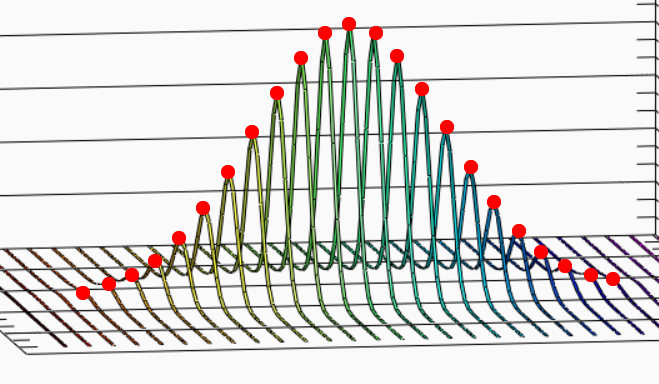
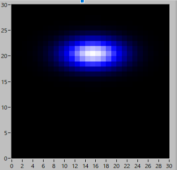

2次元ガウシアン画像のフィッティング方法-03
加算におけるピーク値の求め方
加算像からピーク値を求める前に，まず正規分布のおさらいから始めます．
一次元正規分布は，
\( \Large P(x)= \frac{1}{\sqrt{2 \pi} \sigma^2} Exp \left( - \frac{x^2}{2 \sigma_x^2} \right) \)
となります（簡単のため，x0=0，Base=0, としてあります）．
規格化してあるので，
\( \Large P(x)= \displaystyle \int_{- \infty}^{\infty} \frac{1}{\sqrt{2 \pi} \sigma} Exp \left( - \frac{x^2}{2 \sigma_x^2} \right) dx =1 \)
となります．
今回，フィットした関数は，
\( \Large A_0 Exp \left( - \frac{x^2}{2 \sigma_x^2} \right) \)
です．
さて，今回フィットした値でのピーク値は，実は，以下の図の赤点の加算値となります．

つまり，
Xの加算像なら，Yの分布の積分値
Yの加算像なら，Xの分布の積分値
となるわけです．つまり，
\( \Large Peak Value = \displaystyle \int_{- \infty}^{\infty} A_{0x} Exp \left( - \frac{y^2}{2 \sigma_y^2} \right) dy \)
となります．したがって，
\( \Large \begin{eqnarray} \displaystyle \int_{- \infty}^{\infty} A_{0x} Exp \left( - \frac{y^2}{2 \sigma_y^2} \right) dy
&=& A_{0x} \sqrt{2 \pi} \sigma_y \int_{- \infty}^{\infty} \frac{1}{\sqrt{2 \pi} \sigma_y^2} Exp \left( - \frac{y^2}{2 \sigma_y^2} \right) dy \\
&=& A_{0x} \sqrt{2 \pi} \sigma_y \\
\end{eqnarray} \)
となりますので，
\( \Large \displaystyle A_{0x} = \frac{1}{\sqrt{2 \pi}}\frac{Peak Value_x}{ \sigma_y} \)
となります．
\( \Large \sqrt{2 \pi} \simeq 2.5 \)
なので，大体，2/5，倍となります．
注意すべき点は，
XとYとをたすき掛けにして割る
ことです．
実際に確かめてみましょう．XYの偏差を異なる値で作ってみました．

書記パラメータ，解析結果は，
| 係数 | 初期設定 | フィッティング |
| A0y | 1 | 10.13 |
| y0 | 20 | 20.01 |
| dy | 2 | 1.96 |
| Base_x | 0 | 0.09 |
| A0x | 1 | 5.33 |
| x0 | 15 | 14.99 |
| dx | 4 | 3.82 |
| Base_y | 0 | 0.04 |
| Noize | 0.1 |
となり，XとYとでピークの値が異なることが分かります．
上の計算を行ってみると，
\( \Large \displaystyle A_{0x} = \frac{1}{\sqrt{2 \pi}}\frac{5.33}{ 1.96}=1.08 \)
\( \Large \displaystyle A_{0y} = \frac{1}{\sqrt{2 \pi}}\frac{10.13}{3.82}=1.06 \)
と初期値である1とよく一致していることが分かります．
このように，一見単純で雑なように見える加算方式ですが，きちんと元データを繁栄していることが分かります．
次のページに，新しい（？）フィッティング方法について示します．